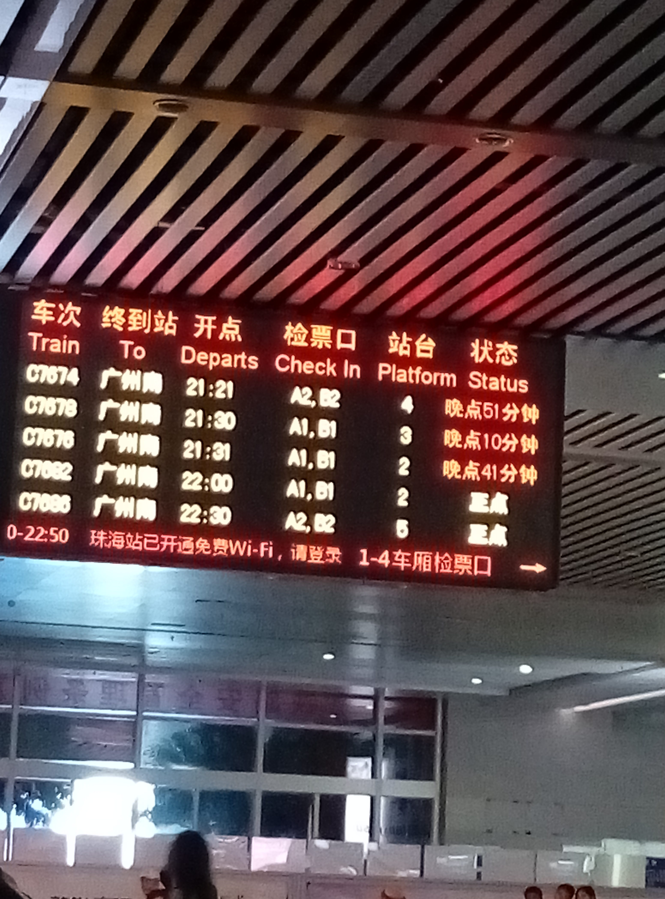

2015澳门行
今年国庆假期匆匆忙忙跑一趟澳门，2014年自己也去过一次，不同的是这次两个人，所以这次的澳门行主要是陪逛，Shopping。
出发前
由于之前工作赶项目，来不及计划这次的旅行，到了国庆假期才来做这个准备，显然有点迟了。
主要考虑到过关的人很多，需要排很久队，所以一定要尽量早点过去过关，于是想在珠海先住一晚，第二天早上早点过去。联系了很多酒店，价钱都比平时升了一倍，甚至还房满的状态，后来想起只好赶最早的一班城轨过去，最早一班的时间大概是6:30 ，在天河过去广州南站至少要一个多小时。
从时间跟金钱上面分析，最后，我们决定在广州南站附近住一晚，第二天赶最早的轻轨即可。实际表明这个选择是正确的，这个旅馆还包接送。这是经验0 ^_^
出发啦
轻轨很准时，不到8点就到达珠海拱北，只是觉得背包有点重，于是去找寄存箱，谁知道珠海站的寄存服务还没上班！！！只好背着过去澳门了。经验1：应该在广州南站的时候寄存。
过关，她是本本的，我是电子的，所以我们跑了两个通道，这个时间过关的基本上都是电子的，估计是很多人过去澳门上班，所以我们的过关时间都差不多。经验2: 如果时间早，通行证本本跟电子的过关时间都差不多，如果再迟点，可能本本的排队会很长，所以能电子的尽量用电子的。
暴走中
过关后，出来左手边便是威尼斯人酒店的免费巴士，很多人排队，所以我们第一站便是威尼斯人酒店。
威尼斯人酒店主要是酒店住宿、购物、赌场，从照片跟标价上看都比较高级奢华。我们就围观，看景色，看别人豪赌。


从威尼斯人出来后，还是从下车的门出来，右手边走，上自动扶梯，一直走到了龙环葡韵，这里主要是葡萄牙人的居住环境，葡式建筑，个人觉得没啥好看的。
然后顺着路标继续走没多远就到了官也街，很小的很短的美食街，吃饭的，特产的，喝的。。。当然在这里解决午饭是很明智的选择，特别推荐的是刚进去街口右手边最后一间店，好像叫兴记咖啡室,为什么推荐呢，主要是，听跟本地人聊天，说一直没涨价，另外一个是味道也相当不错。


解决午饭后，便步行回去威尼斯人坐免费巴士到金沙（注意不是金沙城），所以下一站就是渔人码头了。渔人码头可以看到海边，看到很多城堡，值得过去逛逛。无奈那天天公不作美，有点阵雨，没太阳，所以拍照不好看。

威尼斯人跟金沙估计是同一个老板，所以有直接的穿梭巴士，我们下一站是新马路，所以要做车到葡京，为了省钱，我们做了一个错误的决定，先在金沙坐免费巴士到港澳码头然后再转到新葡京的车。到了港澳码头发现到葡京的人不是一般的多，所以等了好久。经验3:下次应该直接在金沙打的士过去。
到了新葡京，还是赌场，所以我们直接忽略，过去新马路，shopping！新马路人很多，变随便进入了一家澳门本土的金店盛丰。 她挑了好久，最后把需要的都刷卡买买买。
戒指要改大小，所以我们下一站大三巴，澳门标志性景点，拍张照片证明到过，即可。继续往上走便是大炮台。


悲催的回程
看时间差不多了，便往回赶，拿了戒指，便找地方坐车去关口，本来想等公交，但是等了好久还是没等到，便过去新葡京看看，发现人更多，打的都要排很长很长的队伍，所以跑到对面的公交站，站牌跟实际上车的地点有点不符，等了好久终于上了3x 公交，时间已经很晚了，19:15的城轨估计是来不及了，好无奈。
最后到关口已经19:08了，拿着车票跟通行证走了国际外交友谊通道，闪速过关，一路飞奔珠海站，还是来不及，看到屏幕上面显示的停止检票 心都凉了，只好过去人工窗口，排队，改签！改签还是没有座位的，更糟糕的是，竟然晚点一个多小时，WTF！只好在候车区等，友宝上面买瓶水还被吞5块钱，哎……

上了城轨，一路会到广州南，然后地铁，到了万胜围4号线竟然停了，只好去打车，无奈手机没电，叫车也叫不了，黑车，的士都坐地起价，还好有好心人通过叫车软件一起会去，然后半路到好打车的地方我们再打车回去！！！真是一波N折啊！！！经验4:回程尽量早点或者定晚点的轻轨班次的票。